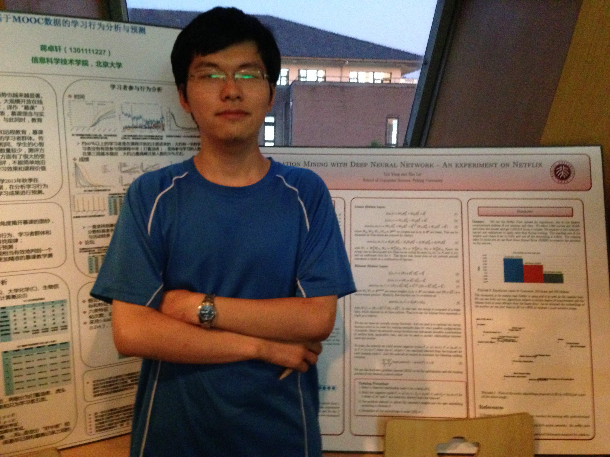

|  |
Lei Sha (沙磊)
Third-year PhD Candidate
Key Laboratory of Computational Linguistics,
School of Electronics Engineering and Computer Science,
Peking University
Working on Natural Language Processing
Supervised by Prof. Zhifang Sui
| E-mail: |
shalei [at] pku.edu.cn |
| Address: |
Science Buildings No. 1
Peking University
No.5 Yiheyuan Road
Haidian District, Beijing |
| Weibo: |
Implement_Alan_Shore |
I am seeking for NLP-related positions, if you are interested, please contact me. |